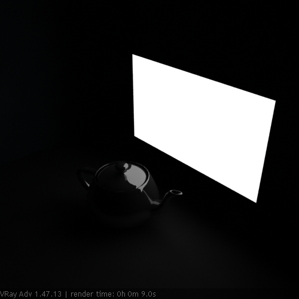

VRayLightMtl
VRayLightMtl Overview
The VRayLightMtl is a special material provided with the V-Ray renderer. This material is generally used for producing self-illuminated surfaces. It also allows for faster rendering rather than with a Standard 3ds Max material with self-illumination enabled. It also allows to turn an object into an actual mesh light source.
Parameters
Color - this is the self-illumination color of the material.
Multiplier - this is the multiplier for the Color. Note that this does not affect the texture map, if specified.
Example: Default Color and Multiplier Values
Here is a scene rendered with the default VRayLightMtl. These examples demonstrate how the material behaves in V-Ray, and how its parameters influence the look of the final results.
The white plane is a default VRayLightMtl. The teapot is a default VRayMtl with Reflection. The rest is just VRayMtl with diffuse colors.
We are going to render this scene with Default Lights turned off until the end of the example, and no lights will be used in it either.
Default Lights - Off.
Multiplier: 1.0
No GI, No lights
As you see, the image is absolutely dark except the plane (self-illuminated) and the reflection on the teapot. Notice we have no GI and no lights at all here, so the dark part of the scene is to be expected.
Multiplier: 50.0
No GI, No lights
Notice that nothing changed in general, BUT the reflection on the teapot got stronger due to higher multiplier. The rest is still black because we still have the GI off.

Multiplier: 1.0
GI: on
As you can see, turning GI on almost didn't change the overall look. That is because of the Multiplier value: 1.0. It acts mainly to self-illuminate the object that has the VRayLightMtl.
Multiplier: 5.0
GI: on
2-sided: off
Now you can see that increasing the Multiplier has visibly influenced the scene (shadows also appears).

Multiplier: 5.0
GI: on
2-sided: on
Scene starting to gather more light because 2-sided is on.
Multiplier: 10.0
GI: on
2-sided: off
As you can see, the back is still dark, but you can already notice the blue wall receiving some GI, due to a higher Multiplier. Shadows also appears more defined.
Multiplier: 10.0
GI: on
2-sided: on
The scene starts to gather more light because 2-sided is on, but we also start to get some burnt areas due to Linear type of Color mapping
Multiplier: 30.0
GI: on - default
2-sided: off
Exponential
So, increasing the Multiplier affects the GI more (we have more light), but you can also see that our render is quite splotchy.
Multiplier: 30.0
GI: on - default
2-sided: on
Exponential
Scene starting to gather more light because 2-sided is on. Still splotchy GI solution.
Multiplier: 30.0
GI: on; 2-sided: off
IR: HSphS: 100
IR: Interp.S: 40
Comparing this result to the previous, the new render looks much better. The GI solution is clearer, and shadows are more precise. Of course, this leads to higher render time.
Multiplier: 30.0
GI: on; 2-sided: on
IR: HSphS: 100
IR: Interp.S: 40
Comparing this result to the previous, the new render looks much better. GI solution is clearer, and shadows are more precise. Of course, this leads to higher render time.
Texture - a texture map to use for the self-illumination color.
Example: Texmap
This example shows how the Texmap slot is used and how the map determines the Color parameter.
Multiplier: 3.0
GI: on; 2-sided: on
IR: HSphS: 100
IR: Interp.S: 40
Exponential
Here, we used a Bitmap in the Texmap slot. The Multiplier is quite low, so only the plane and the reflection on the teapot are visible.
Multiplier: 30.0
GI: on; 2-sided: on
IR: HSphS: 100
IR: Interp.S: 40
Exponential
Increasing the Multiplier leads to a much brighter look in the scene. Notice now that the Bitmap is getting closer to appearing white, due to multiplying the (R,G,B) values of the Bitmap.
Multiplier: 3.0
GI: on; 2-sided: on
IR: HSphS: 100
IR: Interp.S: 40
Exponential
Here, another Bitmap is assigned to the Texmap slot. Notice that we haven't changed the VRayMtls for the surrounding walls, but the scene looks different from the previous one due to the new Bitmap.
Multiplier: 30.0
GI: on; 2-sided: on
IR: HSphS: 100
IR: Interp.S: 40
Exponential
Increasing the Multiplier leads to a much brighter look in the scene. Notice now the Bitmap is getting closer to appearing white, due to multiplying the (R,G,B) values of the Bitmap.
Opacity - a texture to use as opacity for the material. Note that making the material less opaque does not affect the intensity of the self-illumination color. This is so that you can create perfectly transparent materials that nevertheless still emit light.
VRayLightMtl supports color opacity. This means that it uses the "color" output of textures rather than their "mono" output, in difference from the Opacity slot of VRayMtl materials.
Emit light on back side - checking this option makes the object emit light from its back side as well. If this is off, the material is rendered as black on the back sides.
Compensate camera exposure - when enabled, the intensity of the light material will be adjusted to compensate the exposure correction from the VRayPhysicalCamera.
Multiply color by opacity - when enabled, the color of the light material is multiplied by the opacity texture. Otherwise, the color and opacity act independently (so-called additive transparency).
Displace - allows the user to add a displacement map to the V-Ray Light Material.
Direct Illumination
The controls in this section allow you to turn the objects which have this VRayLightMtl material applied into actual direct mesh light sources. The effect is equivalent to creating a VRayLight in Mesh mode for the same object. The controls in this section are intentionally simple; if you need more control over the light source (exclude objects from illumination etc), it is better to use a VRayLight instead.
There are currently some restrictions on using these options. For more details, please see the Notes section below.
On - when enabled, turns any objects with the same material into mesh light sources. Note that this currently does not work if the material is inside a Multi/Sub-object material.
Subdivs - controls the number of samples used for direct sampling of the mesh light. Lower values may be faster to calculate, but may introduce noise in the image. Higher values reduce the noise, but increase render times.
Notes
-
You can use the VRayLightMtl as a light source assigned to an object. Increasing the multiplier will affect the GI solution and will produce more light. Note that over bright colors may look the same as pure white but the GI results will be different. For more information see the Examples section.
-
If you know the photometric power of a self-illuminated object in lumens (e.g. 1700 lm for a 100-watt bulb) you can calculate the multiplier for VRayLightMtl if you divide the lumens by the surface area of the object in meters (the 3ds Max Measure utility can be used for this), provided that the self-illuminated color is pure white.
-
The direct illumination options currently only work properly if the VRayLightMtl material is the only material applied on the object. They will not work if the material is part of a complex material like a Multi/sub-object material or a VRayBlendMtl material. This restriction will probably be removed in a future release.
-
The direct illumination options do not work properly if the object with the VRayLightMtl has motion blur. This will be corrected in a future release.